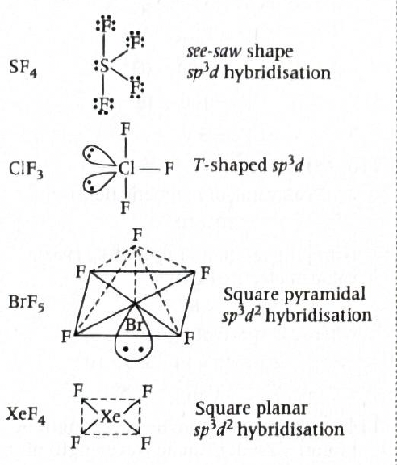

Answer: \((b)\ 4\)
Solution:
Given:
For a crystalline solid,
\(d = \dfrac{Z \times M}{a^3 \times N_A}\)
where \(Z\) is the number of atoms present in one unit cell.
Therefore,
\(Z = \dfrac{d \times a^3 \times N_A}{M}\)
\(Z = \dfrac{(2.7 \times 10^3)\times (405 \times 10^{-12})^3 \times (6.023 \times 10^{23})}{2.7 \times 10^{-2}}\)
\((405 \times 10^{-12})^3 = 405^3 \times 10^{-36}\)
\(405^3 = 66{,}430{,}125\)
So, \(a^3 = 6.6430125 \times 10^{7} \times 10^{-36} = 6.6430125 \times 10^{-29}\ \mathrm{m^3}\)
Now, \(d \times a^3 = (2.7 \times 10^3)(6.6430125 \times 10^{-29})\)
\(= 17.93613375 \times 10^{-26} = 1.793613375 \times 10^{-25}\)
Multiplying by \(N_A\),
\(1.793613375 \times 10^{-25} \times 6.023 \times 10^{23} \approx 0.108\)
Therefore, \(Z \approx \dfrac{0.108}{2.7 \times 10^{-2}} = 4\)
Therefore:
\(\boxed{4}\)
Why this method works:
\(d = \dfrac{\text{mass of unit cell}}{\text{volume of unit cell}}\)
\(\dfrac{Z \times M}{N_A}\)
\(a^3\)
\(d = \dfrac{Z \times M}{N_A \times a^3}\)
JEE / NCERT takeaway:
\(d = \dfrac{Z M}{N_A a^3}\)
\(Z = \dfrac{d a^3 N_A}{M}\)
\(a^3\)
Helpful diagram:
Mass of one unit cell = \( \dfrac{Z M}{N_A} \)
Volume of one unit cell = \( a^3 \)
So density:
\( d = \dfrac{\text{mass}}{\text{volume}} = \dfrac{Z M}{N_A a^3} \)
1-minute solving trick:
\(Z = \dfrac{d a^3 N_A}{M}\)
\(\dfrac{2.7 \times 10^3}{2.7 \times 10^{-2}} = 10^5\)
\(Z = 10^5 \times (405 \times 10^{-12})^3 \times 6.023 \times 10^{23}\)
\(10^5 \times 10^{-36} \times 10^{23} = 10^{-8}\)
More intuitive shortcut:
\((405)^3 \approx 6.64 \times 10^7\)
\(6.64 \times 6.02 \approx 40\)
\(40 \times 10^{-1} = 4\)
Common mistakes to avoid:
Chapter / Topic / Subtopic:
Final exam-style answer:
For a cubic unit cell,
\(d = \dfrac{Z M}{a^3 N_A}\)
Therefore,
\(Z = \dfrac{d a^3 N_A}{M}\)
Substituting values:
\(Z = \dfrac{(2.7 \times 10^3)\times (405 \times 10^{-12})^3 \times (6.023 \times 10^{23})}{2.7 \times 10^{-2}}\)
\(Z = 4\)
Hence, the number of atoms present in one unit cell is:
\(\boxed{(b)\ 4}\)
Quick cheatsheet:
\(d = \dfrac{Z M}{N_A a^3}\)
\(Z = \dfrac{d a^3 N_A}{M}\)
\(a^3\)
\(1\ \mathrm{pm} = 10^{-12}\ \mathrm{m}\)
\(\mathrm{sc}=1,\quad \mathrm{bcc}=2,\quad \mathrm{fcc}=4\)
\(\text{If } Z=4,\text{ lattice is often fcc}\)